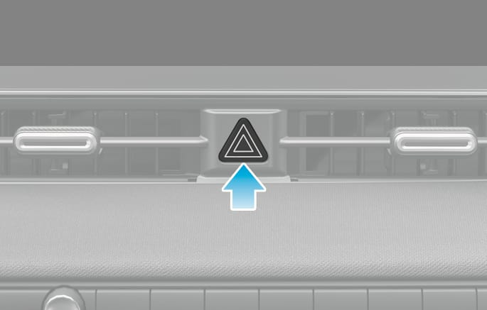

비상 상황 경고하기

2C_HazardWarningLamp
차량 고장 등과 같은 비상 상황이 발생했을 때 주위 차량에 비상 상황을 알려 사고를 방지하기 위해 비상 경고등을 작동시키십시오.
-
비상 경고등을 켜면 모든 방향지시등이 일제히 깜빡입니다.
-
비상 경고등은 시동 상태와 관계없이 항시 작동합니다.
-
비상 경고등이 깜빡이는 동안은 방향지시등이 작동하지 않습니다.
필요한 경우에만 비상 경고등을 켜십시오.
-
비상 상황이 아닐 때 비상 경고등을 켜면 다른 운전자에게 혼란을 줄 수 있습니다.
-
비상 경고등을 장시간 켜 두면 배터리가 방전될 수 있습니다.